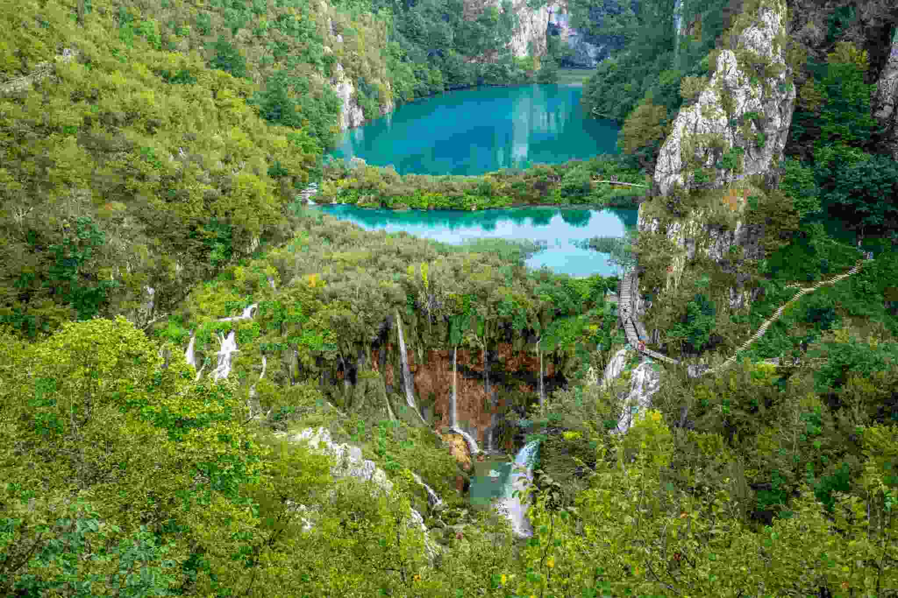

Территория национального парка «Плитвицкие озёра» составляет 29 482 га, включает в себя 16 крупных и несколько меньших карстовых каскаднорасположенных озёр, 140 водопадов, 20 пещер и уникальный буковый и хвойный лес, сохранившийся с древнейших времён. На его территории обитают медведи, волки, многие виды редких птиц и других животных.

Впервые о «Плитвицких озёрах» стало известно благодаря записям священника Доминика Вукасовича в 1777 году. Однако национальным парком эта территория стала лишь 8 апреля 1949 года. До 1958 года парк был недоступен для туристов и в нём были проложены только просеки (тропинки). Суммарная разница между уровнем верхнего и нижнего озёр составляет 133 метра. Самое верхнее озеро каскада питается от двух небольших речек, носящих названия Црна и Биела («Чёрная» и «Белая»). Плитвицкие озёра — одно из немногих мест на нашей планете, где каждый год появляются новые водопады, что связано с известняковым происхождением местных гор. Упавшие в воду листва и сучья с растущих поблизости деревьев быстро покрываются кальцефилами (так называемые «меловые растения»), которые, отмирая, каменеют и образуют твёрдые отложения, перекрывающие реки. Вода, постепенно размывая подобные «дамбы», образует новые водопады. Парк расположен в гористой местности, самая высокая точка — гора Мала Капела (1280 м). С 1979 года «Плитвицкие озёра» стали «Всемирным наследием» ЮНЕСКО.